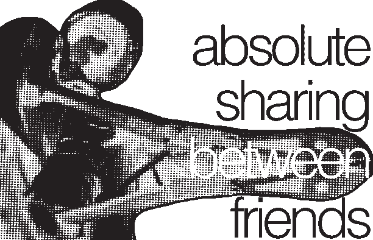

The great social body of Empire, the great big social body of Empire, which is like an enormous round jellyfish beached on all the roundness of the earth is implanted with electrodes. Hundreds, thousands, such an unbelievable number of electrodes, and such a variety of different types that they don’t even seem like electrodes. There’s the TV electrode, of course, but there’s also the money electrode, the pharmaceutical electrode, and the Jeune-Fille electrode. With those thousands and millions of electrodes, so many kinds that I can’t even count them, they manage the dull encephalogram of the imperial metropolis. It’s through these mostly imperceptible channels, that they transmit, second by second, the information, the mental states, the affects and the counter-affects that prolong our universal sleep. Not to mention all the receptors that are attached to the electrodes. The journalists, sociologists, cops, intellectuals, professors and other agents who, incomprehensibly, have been delegated with the task of supervising the activity of the electrodes.
It’s no accident that at a precise moment they transmit either a feeling of terror, of contentment, or of menace. It’s advisable to maintain the population a certain level of anxiety, in order to preserve the general availability to regression, the taste for dependence. No one must free herself from this infantile position of satisfied or quarrelsome passivity, from the numb comfort or the groaning complaints that produce the nasty drone of the imperial incubator. They say, “the time of heroes is over.” hoping to bury along with it all forms of heroism.
The sleep of our era is not a good sleep that provides rest. It’s an anxious sleep that leaves you feeling even more worn out, desiring only to go back to sleep again, to escape a little longer this irritating reality. There is a narcosis that begs for an even deeper narcosis. Those who, by luck or misfortune, awake from the prescribed sleep, come into this world as lost children. Where are words, where is the house, where are my ancestors, where are my loves and who are my friends? There are none, my child. Everything has to be built. You must build the language that you will live in. You must build the house where you’ll no longer be alone. You must find the ancestors who will make you more free, and you must invent the new sentimental education through which, once again, you will love. And all of this you must build it upon the general hostility because those who wake up are the nightmare of those who still sleep.
Here reigns the rule of non-action which expresses itself thus: the fruitfulness of true action lies within itself. I could put it another way, I could say: True action is not a project that you accomplish, but a process to which you abandon yourself. Whoever acts today, acts as a lost child. Wandering governs this abandon. We wander. We wander among the ruins of civilization. And precisely because it is in ruins, this civilization, there is no need to confront it. It really is a strange war that we've entered into, and that requires the production of worlds and languages, the opening of places, the building of homes, in the midst of a disaster.
There is this old notion, Bolshevik and a little chilly for sure: building the Party. I believe that our present war is about building the Party, or rather; it’s about giving this deserted fiction a new content. We talk, we lick each other, we make a film, a party, a riot, we meet a friend, we share a meal, a bed, we love, in other words, we build the Party. Fictions are serious things; we need fiction to believe in the reality we’re living. The Party is the central fiction, the one that tells the war of our time.
In the last centuries of the Roman Empire, everything was similarly worn-out. Bodies were tired, the gods were dying, and presence was in crisis. From every corner of a world in exile, resounded the great refrain: “Let’s be done with this.” The end of a civilization called for a new beginning. Wandering relieved the feeling of being a stranger everywhere. It was necessary to remove oneself from this business of civilization. And while the infamous sects were experimenting with unique forms of communism, some looked to solitude for the necessary exodus. They were called the Monachois, “the solitaries,” the “only ones.” They settled alone in the desert, miles from Alexandria, and soon they were so many, these solitaries, these deserters, that they had to invent rules for collective life; and the influence of Christian ascetism gave rise to the first monasteries.
We can say that the first monasteries produced a civilization even more appalling than the previous one. Nevertheless, a civilization was created. This is to defend and illustrate the strategic value of “offensive retreat.” In the art of war, it is sometimes better to produce places and friendships than weapons and shields. Whoever goes into exile, exiles, the stranger who leaves takes with him the inhabitable city.
Fathers were the first to disappear. They went to the factory, to the office. Then the mothers, they went to the factory, to the office. And each time, it wasn’t a father or a mother who disappeared; it was a symbolic order, a world. The world of the fathers vanished first, then that of the mothers, the symbolic order of the mother that nothing until then had managed to shake. And this loss was so incalculable, and the mourning so total, that no one can agree to go through it. Empire is this desire for a neo-matriarchy which would automatically take over for a dead patriarchy. There is no revolt more absolute than the one that defies this benevolent domination, this warm power, this motherly embrace.
The lost children are the orphans of all known orders. So lucky are the orphans, the chaos of the world belongs to them. You cry over all that you’ve lost. Indeed, we’ve lost everything. But look around us: we’ve gained brothers and sisters, so many brothers and sisters. Now, only nostalgia separates us, from the unknown.
You go, you are lost. The measure of your value is nowhere to be found. You go, and you don’t know who you are. But this ignorance is a blessing. And you are without value, like the first man. Wander the roads… If you weren’t so lost, you wouldn’t be so destined for encounters. Let’s go away… it’s high time. But please, let’s go together. Look at our gestures, the rising grace within our gestures; Look at our abandon, how beautiful it is that nothing catches us. Look at our bodies, how fluidly they mix. How long it’s been since such free gestures descended on the world.
But you know… there are still walls against our communism. There are walls within and between us, that continue to divide us. We’re still not done with this world. There’s still jealousy, stupidity, the desire to be someone, to be recognized, the desire to be worth something, and worse, the need for authority. These are the ruins the old world has left within us, and which remain to be demolished. Under certain lights, our fall sometimes feels like a decline. Where are we going?
There are the Cathares who hate husbands even more than lovers. There are the Gnostics who find more charm in the orgy than in solitary coupling. There is the Italian bishop in the 15th century who was excommunicated for his belief that any woman refusing her body to a man who asked for it in the name of charity … was a sinner. There are the Begards and the Beguines who live in collective houses and who devoted their extreme idleness to visiting each other. There are the Spirituals who insist that for the perfect ones, sin no longer exists; they call each other brothers and sisters, and their Valentines Day is not a celebration of the couple, but a day when the married woman can go with whomever she wants.
Okay, now, there is the metropolis. Appropriating what can’t be appropriated, pretending to ignore perdition, playing the man, the woman, the husband, the lover… playing the couple …keeping busy. Accommodating oneself with the utmost seriousness to the most painful of infantilisms. Forgetting… in a debauchery of feelings, the cynicism to which life in the metropolis condemns us. And talking about love… again and forever, after so many breakups. Those who say that another world is possible, and who don’t bring with them a sentimental education other than that of novels and television deserve to be spat in the face.
The most abject state I know is the state of being in love. Between loving and being in love, there is the difference of an assumed destiny and an endured condition.
The question is to know whether communism is collective property or absence of property. And then, to know what absence of property is. For us, communism is putting-in-common, free use. We decide to put in common a number of our possessions. What we do is fill the outer form of property with a content that sabotages it, In other words, absolute sharing between friends. What’s important here is not the shared object, but its contingent mode, which is always to be built.
The orgy only proves this: that sexuality is nothing, nothing but a certain distance between bodies.
If I had to define the old world, I’d say: the old world is a certain way of linking affects and gestures, affects to words. It is a certain kind of sentimental education. And we really don’t want it anymore. If I had to define the Orgy I’d say: the orgy is what happens whenever someone disturbs these links between affects and gestures, between affects and words, and others follow.
We try to extract from love all possession, all identification in order to be able to love. In every situation there’s a certain distance between bodies. Not a spatial distance, but an ethical distance. It’s the difference between Life-Forms. The idea of love, of intimacy, and all that stuff, was invented so we could no longer assume this distance, no longer play with it. To prevent bodies from dancing, and elaborating an art of distances. Because every distance is a proximity, and every proximity is still a distance. A certain idea of play, combined with the certainty that we’re building the Party, puts us at an equal distance from both the couple and a sordid liberalism. You see, the Party, it’s bodies that circulate it’s places, and it’s bodies circulating.
Remember, it’s in the depths of separation that we found communism. There was nothing left to share but we wanted to share.
If you want, I’d really like to build the party with you, well, if you’re free.